Language & Literature · An Interactive Reading Room for Grades K–12
Horror in literature
A strange sound, a locked room, a warning ignored, an unconfessed deed. Read how master writers construct fear—and what their stories ask us to notice about the human condition.
Begin with a short classroom presentation on how literary horror developed. Then read a teacher-chosen passage before moving toward complete Gothic, speculative, and forensic stories as students are ready. Read Bible passages as Scripture in context, with a holy purpose distinct from fictional thrills.
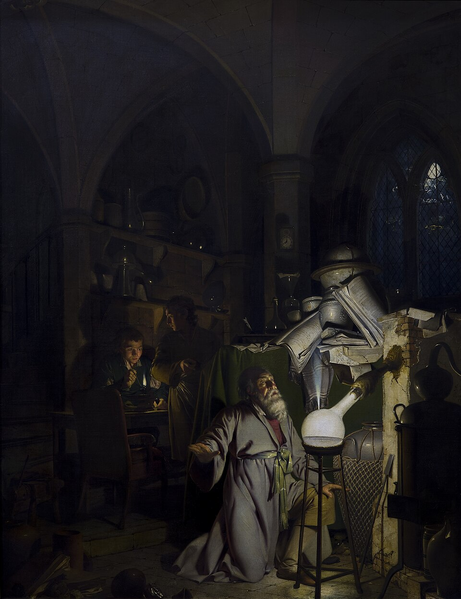
Joseph Wright of Derby, The Alchymist in Search of the Philosopher’s Stone (1771). What does the light reveal about wonder and ambition? Derby Museum, public domain, via Wikimedia Commons. Enlarge image.
Present to class · about 8–10 minutes
A brief history of horror in literature
Move through five stops, then read one passage together. Ask at every stop: What did people fear, and how did the writer make readers feel it? This is a selective history of the literary tradition, not a claim that frightening stories began in Europe.
Stop 1 of 5
Before the Gothic novel
Frightening stories were already being told
Across many cultures, oral tales and folklore used strange events, dangerous places, and uncertain endings. Later writers could draw on those storytelling habits when they wrote for print.
Say: “A story can make us uneasy before anything frightening appears. Listen for what the storyteller withholds.”
Ask: In a story told aloud, what can a pause make us imagine?
F. O. C. Darley illustrated Irving’s later printed retelling of a local legend in 1850. What does the picture leave in shadow? Metropolitan Museum of Art, CC0, via Wikimedia Commons.
1764 and the late 1700s
The Gothic novel gives fear a setting
Horace Walpole’s The Castle of Otranto (1764) helped establish the Gothic novel. Castles, inherited secrets, and uncertain supernatural events created suspense; Ann Radcliffe later made anticipation and suggestion central to her fiction.
Say: “The building is more than scenery. Its closed doors make us wonder what a family or a ruler has hidden.”
Ask: What can a locked door make us expect before it opens?
An early title page of Walpole’s The Castle of Otranto. The book first appeared in 1764; its later subtitle called it “A Gothic Story.” Public domain, via Wikimedia Commons.
1818–1840s
Fear moves into creation and conscience
Mary Shelley’s Frankenstein (1818) asks what a maker owes the life he creates. In stories such as Poe’s “The Tell-Tale Heart” (1843), an unsettled narrator’s own voice becomes a source of dread.
Say: “The question is no longer only ‘What is in the castle?’ It can also be ‘What has this person done, and what will they do next?’”
Ask: Which is more unsettling: an unknown creature or a narrator we cannot trust?
Title page of the first edition of Frankenstein; or, The Modern Prometheus (1818). The novel appeared anonymously. What does the subtitle suggest about creation and responsibility? Public domain, via Wikimedia Commons.
1890s–early 1900s
New powers create new fears
H. G. Wells imagined ordinary people facing overwhelming technology in The War of the Worlds (1898). W. W. Jacobs brought dread into a family home in “The Monkey’s Paw” (1902). The frightening setting could now be a familiar street or living room.
Say: “Writers turned new questions about science and power into stories, while keeping the oldest suspense device: waiting to see what happens.”
Ask: How does fear change when it arrives at home?
Henrique Alvim Corrêa’s illustration for the 1906 edition of Wells’s 1898 novel. How does the machine make people look small? Public domain, via Wikimedia Commons.
1948 and beyond
The ordinary community can become frightening
Shirley Jackson’s “The Lottery” (1948) begins in a sunny village and asks what happens when neighbors follow a cruel custom without questioning it. Later horror continues to find fear in familiar places and human choices.
Say: “A frightening story may ask us to look at a community’s behavior, even when the setting looks safe.”
Ask: Why might sunshine make a disturbing choice feel more surprising?
Teacher note: discuss the premise with younger students; preview the full story’s communal violence before assigning it to older students.
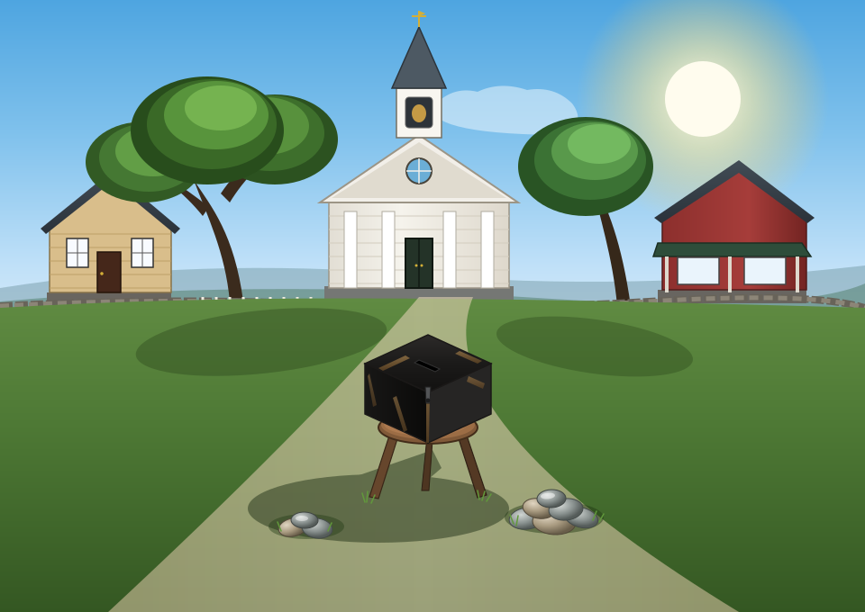
ClassroomOS illustration: a familiar village square, warm daylight, and one unexplained box. What expectation does the ordinary setting create? Original artwork, 2026.
Then read together: Follow the change from setting to conscience in the close-reading studio, or choose an age-appropriate passage from the story shelf. Scripture is read separately as Scripture in its own context.
These are teaching recommendations, not fixed reading levels. Preview each selection and let students choose a quieter alternative when a scene is too intense.
K–5 · Mystery before fright
Tell a short, softened version of Sleepy Hollow or examine the silent nautical puzzle of the Mary Celeste. Ask what evidence remains open and how atmosphere shapes what we imagine.
Use atmosphere, prediction, and kindness. Skip graphic violence, disturbing full texts, and despair.
Grades 6–8 · Suspense, conscience, & science
Read The Monkey's Paw, selected Poe scenes (or his satirical warning Never Bet the Devil Your Head), Benét's folklore trial The Devil and Daniel Webster, H. G. Wells' War of the Worlds, or Conan Doyle's George Edalji investigation. Track what a character knows before a dangerous decision.
Preview grief, death, and prejudice; offer another text or an excerpt when needed.
Grades 9–12 · Hubris, guilt, & justice
Read full texts in pairs or independently: compare Frankenstein and Hawthorne's The Birth-Mark on technological hubris, Poe's The Conqueror Worm on mortality, Daniel Webster on the inescapable guilty conscience, the Salem trial examinations, and The Yellow Wallpaper.
The Lottery, Usher, and the 1692 hysteria require thoughtful moral framing.
Four traditions of literary fear
In a Christian literature curriculum, fear is not studied as morbid spectacle or cheap shock. Rather, writers use dread to test moral reality, explore the burden of unconfessed guilt, question human self-sufficiency, and summon awe before the living God.
1. Gothic & Moral Dread
Decay, haunted spaces, hidden family secrets, and the psychological torment of concealed wrongdoing.
Core question: What happens when guilt is buried in the dark rather than confessed to the light?
2. Sci-Fi & Speculative Dread
Technological hubris, playing God, unbridled experimentation, and cold cosmic insignificance.
Core question: What happens when human cleverness outpaces humility, reverence, and love?
3. Forensic & True Crime Dread
Historical courtrooms, false accusations, circumstantial evidence, and the inner agony of the guilty conscience.
Core question: Can human deceit permanently conceal the truth, and how is the innocent defended?
4. Holy Awe (Biblical Fear)
Encounters with divine majesty, apocalyptic reckoning, and holy judgment distinct from fictional thrills.
Core question: How does holy reverence (yir'ah) differ from worldly dread and lead to repentance?
The craft of fear
Before reading closely, learn the two tools writers use most: how much they show, and how fast they make us read.
Ann Radcliffe's Classic Distinction (1826): Terror vs. Horror
In On the Supernatural in Poetry, Gothic pioneer Ann Radcliffe distinguished between terror and horror: Terror expands the soul and awakens the faculties through suspense, shadow, and anticipation of unseen danger; horror contracts and freezes the faculties through direct confrontation with gruesome deeds or graphic shock.
The Radcliffe Craft Dial: Terror vs. Horror Analyzer
Select a story beat below to test its craft against Ann Radcliffe’s 1826 criteria:
W.W. Jacobs · The Monkey's Paw (1902)
The knock at the door comes in the dead of night...
Spectrum Position:92% Terror (Soul-Expanding Dread)
Obscurity & Suggestion
Leaving horror to imagination
Anticipation & Suspense
Prolonging tension before resolution
Moral & Spiritual Gravity
Testing conscience & human hubris
Radcliffe’s ideal of sublime terror: the faculties are expanded to maximum pitch...
The Syntax of Suspense: Pulse & Sentence Length
Horror is fundamentally rhythmic. Writers shape punctuation and clause length to physically accelerate or suspend a reader's heart rate.
Was it possible they heard not? Almighty God!—no, no! They heard!—they suspected!...
Rhythmic Reader Pulse Simulator
Average clause length: 4.8 words per clause Punctuation style: 6 dashes in 3 lines Syntactic tempo: Rapid, hyper-ventilating staccato
A three-pass reading ritual
Use one scene, paragraph, or court exchange at a time. Begin with the words on the page before moving to a moral or forensic judgment.
Notice. Name one exact detail: a sound, physical object, atmospheric change, or unsaid word.
Trace. Find what the reader knows that a character does not—or what the narrator or witness may be hiding.
Discuss. Ask what action the fear leads to: does it provoke repentance, cruelty, panic, courage, or humility? Support your answer with the passage.
The Close-Reading Studio ("The Evidence Lab")
Choose a landmark text below. Click highlighted tokens or toggle layers to examine how master authors construct dread through craft, irony, and conscience.
Highlight Layer:
Edgar Allan Poe · The Tell-Tale Heart (1843)Gothic & Moral Dread
Close-Reading Inspector
Click any colored phrase in the text to inspect what the author is doing.
Notice · Auditory & Rhythm
Staccato repetition and gasping cadence
Poe uses short exclamations broken by dashes. The narrator speaks in frantic triples ("heard... suspected... knew"). The punctuation forces the reader to breathe at a panic pace.
Socratic seminar prompt: What does the narrator believe he is concealing, and why is conscience physically impossible to silence?
The story shelf
Each link opens a public-domain text from Project Gutenberg, university legal archives, or its original publisher. Start with the close-reading question beside each title, or expand the in-page excerpt to study the opening lines.
Tradition:23 works displayed
Grade Band:
Gothic & Moral Dread
Locked chambers, unraveling minds, and the eerie echoes of buried choices. These stories explore what happens inside a person when conscience is silenced.
The Legend of Sleepy Hollow
Washington Irving · 1820 · teacher-selected passages K–5; full story 6–12
Fig. 1. Ichabod flees the Horseman, etched by F. O. C. Darley (1850). Notice what the artist shows and what he leaves to the trees and shadows. Metropolitan Museum of Art, CC0, via Wikimedia Commons.
A village tells a ghost story; a nervous schoolmaster rides home at night. Is the fear in the road, the legend, or the rider's imagination?
Look for: the details Irving gives before the nighttime ride. Which ones prepare us to expect a ghost?
Content: pursuit and an unexplained disappearance.
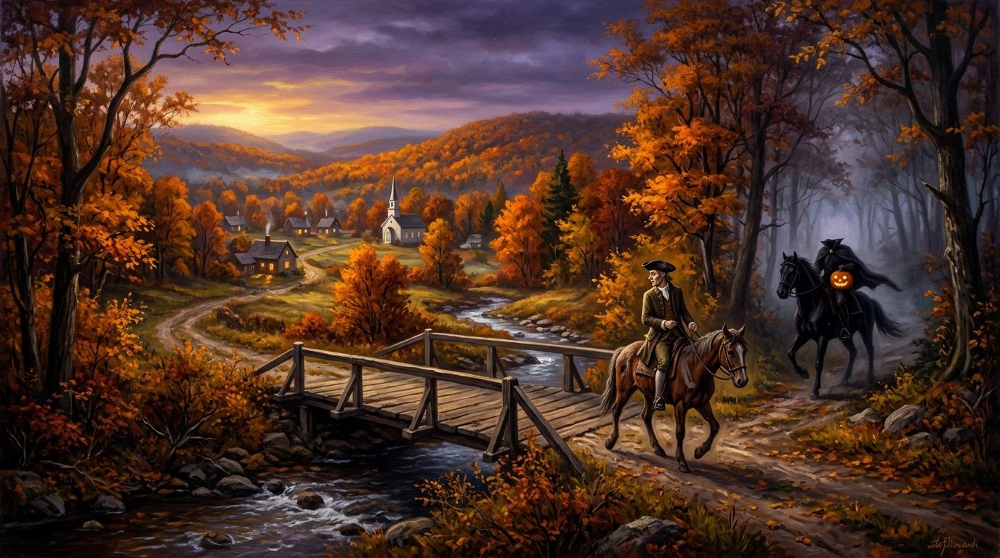
Landscape synopsis: Sleepy Hollow at Twilight. Ichabod Crane hastens across the bridge toward the distant candlelit village while the mysterious cloaked Horseman waits in the autumn woods. What contrast between domestic warmth and superstitious fear does the landscape emphasize?
“In the dark shadow of the grove, on the margin of the brook, he beheld something huge, misshapen, black and towering. It stirred not, but seemed gathered up in the gloom, like some gigantic monster ready to spring upon the traveller... The hair of the affrighted pedagogue rose upon his head with terror. What was to be done?”
Look for: Irving’s delay. Why describe the silhouette before letting it move?
The Monkey's Paw
W. W. Jacobs · 1902 · grades 6–12
A family receives three wishes, along with a solemn warning. Suspense grows from what they desire and what trying to reverse providence costs.
Look for: the sergeant's first warning about the paw. Why do the characters keep it anyway?
Content: death, grief, and an ominous knock at the door.
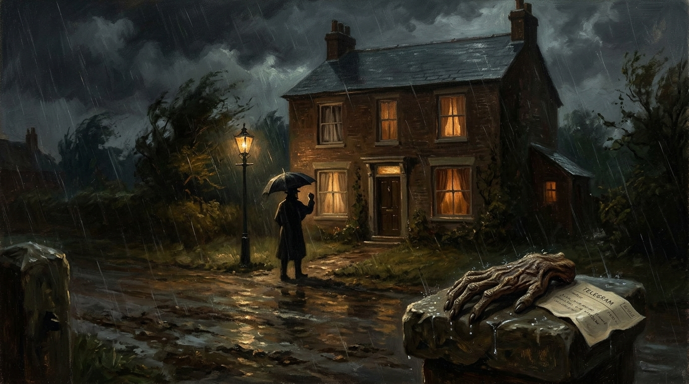
Landscape synopsis: The Darkened Villa. Outside Laburnam Villa on a rain-swept midnight, a lone traveler arrives under a flickering streetlamp while the dried talismanic paw rests on a stone post beside a telegram. How does the ordinary suburban home become a theater of moral consequence?
“‘It had a spell put on it by an old fakir,’ said the sergeant-major, ‘a very holy man. He wanted to show that fate ruled people’s lives, and that those who interfered with it did so to their sorrow. He put a spell on it so that three separate men could each have three wishes from it.’”
Look for: Why does the warning tempt human curiosity rather than quelling it?
The Tell-Tale Heart
Edgar Allan Poe · 1843 · selected passages 6–8; full story 9–12
Fig. 2. Edgar Allan Poe, daguerreotype portrait (1840s). His narrators often insist they are sane; compare that calm voice with this sober face. U.S. National Archives, public domain, via Wikimedia Commons.
The narrator insists on his sanity while describing a terrible deed. The voice itself, unhinged by hidden guilt, becomes the source of terror.
Look for: the opening claim about the narrator's senses. What does it make you trust or doubt?
Content: murder, concealment, and a tormented narrator.
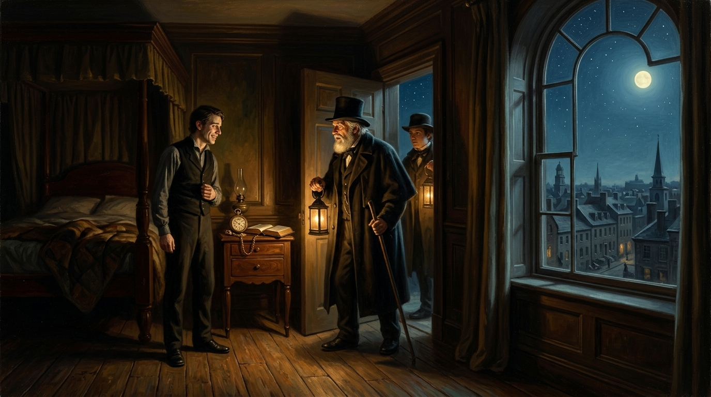
Landscape synopsis: Midnight Conscience. The strained narrator smiles with forced composure before the night watchmen in the lantern-lit chamber, while an arched window reveals the peaceful sleeping city outside. Why is hidden guilt physically impossible to silence before the light of truth?
“True!—nervous—very, very dreadfully nervous I had been and am; but why will you say that I am mad? The disease had sharpened my senses—not destroyed—not dulled them. Above all was the sense of hearing acute. I heard all things in the heaven and in the earth. I heard many things in hell.”
Look for: How does claiming to hear things in hell destroy his claim of rational sanity?
The Fall of the House of Usher
Edgar Allan Poe · 1839 · grades 9–12
Fig. 3. Harry Clarke's ink illustration for Poe's “Usher” (1919): Lady Madeline at the door. Look at how the figure and the dark architecture blur together, as in Poe's house. Public domain, via Wikimedia Commons.
A visitor enters a decaying house where family line, architecture, and dread seem to echo and consume one another.
Look for: the first description of the house. Which words describe a stone building, and which seem to describe a dying person?
Content: illness, death, premature burial, and intense dread.
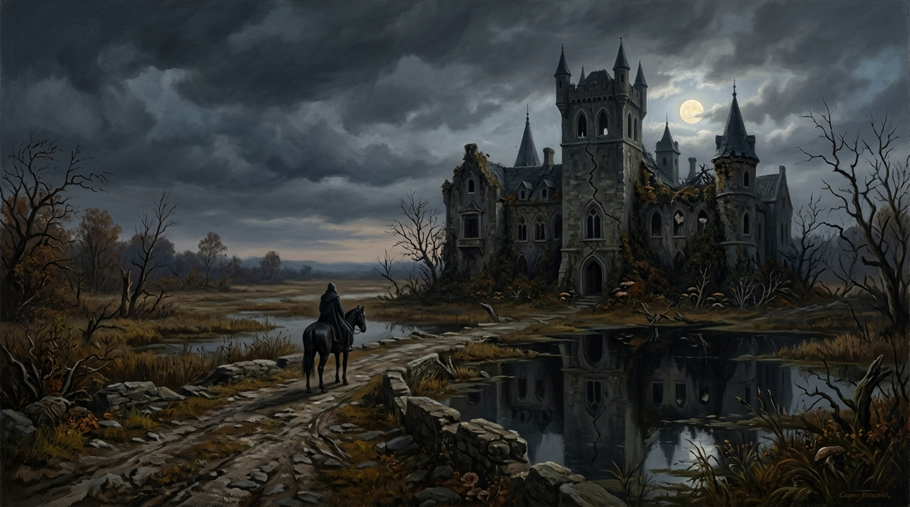
Landscape synopsis: The Melancholy House. In the tradition of Caspar David Friedrich, a solitary rider halts on the desolate causeway before the crumbling House of Usher and its black tarn. Notice the fissure dividing the stones: how does the architecture mirror the collapse of human self-sufficiency?
“During the whole of a dull, dark, and soundless day in the autumn of the year, when the clouds hung oppressively low in the heavens, I had been passing alone, on horseback, through a singularly dreary tract of country; and at length found myself, as the shades of the evening drew on, within view of the melancholy House of Usher.”
An allegorical poem staging human life as a bizarre theater performance watched by weeping angels. Puppets chase phantoms until a crawling, blood-red vermin devours the actors and the curtain falls on the tragedy “Man.”
Look for: the weeping angels in the audience. Why are heavenly watchers powerless to intervene, and what does this reveal about Poe's bleak vision of mortality without Christian resurrection hope?
Content: mortal dread, grotesque allegorical imagery, and cosmic despair. Pair with Ecclesiastes 3:19–20 and 1 Corinthians 15:54–55.
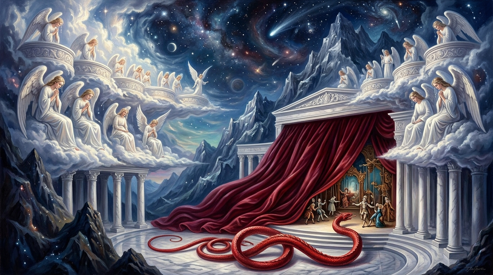
Allegorical synopsis: The Cosmic Theater. Weeping seraphs watch from starlit cloud balconies as a funeral curtain descends upon an ornate puppet stage. How does Poe’s bleak allegorical tragedy invert the Christian promise of resurrection and victory over the grave?
“But see, amid the mimic rout,
A crawling shape intrude!
A blood-red thing that writhes from out
The scenic solitude!
It writhes!—it writhes!—with mortal pangs
The mimes become its food,
And seraphs sob at vermin fangs
In human gore imbued...
Out—out are the lights—out all!
And, over each quivering form,
The curtain, a funeral pall,
Comes down with the rush of a storm,
While the angels, all pallid and wan,
Uprising, unveiling, affirm
That the play is the tragedy, ‘Man,’
And its hero, the Conqueror Worm.”
Look for: Why does Poe name the Worm the “hero” of the tragedy? How does this invert the classic hero’s triumph into universal decay?
Never Bet the Devil Your Head
Edgar Allan Poe · 1841 · grades 8–12
A biting satirical Gothic tale about Toby Dammit, a dissolute young man who punctuates every reckless boast with the oath, “I’ll bet the Devil my head.” When a quiet little gentleman in a black coat accepts the wager at a covered bridge, Toby discovers the literal cost of careless speech.
Look for: Toby’s habit of speech. How does his flippant slang mask his moral decay, and how does Poe use dark satire to deliver a serious warning about accountability and words?
Content: satirical decapitation (non-graphic comic macabre), vices, and demonic visitation. Connect to Matthew 12:36 and Proverbs 18:21.
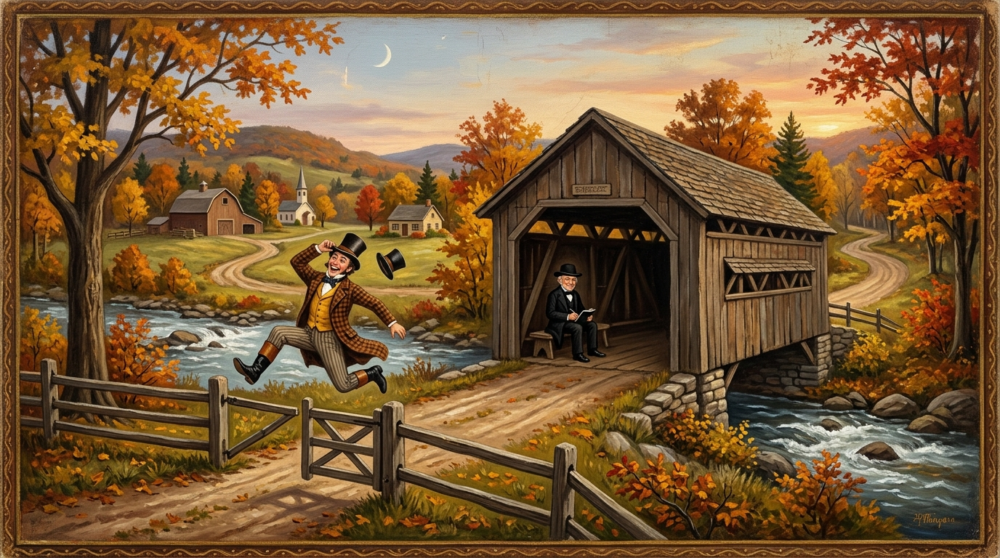
Landscape synopsis: The Covered Bridge Morality. Toby Dammit leaps recklessly over the river turnstile, unaware of the courteous gentleman in black waiting in the shadows with his ledger. How does Poe use early-American satire to deliver a sober warning about careless oaths (Matthew 12:36)?
“‘I’ll bet the Devil my head,’ said he, leaning over the stile, ‘that I can leap over that turnstile and cut a pigeon-wing before I come down.’... Just then I noticed an old gentleman sitting in the shadow of the bridge. He was dressed in a suit of black... ‘Ahem!’ said he. ‘Did I understand you to say, sir, that you would bet the Devil your head?’... ‘Done!’ said the little old gentleman in black, stepping smartly forward.”
Look for: How does the Devil appear not as a horned monster, but as a courteous, punctual collector of an idle debt?
Young Goodman Brown
Nathaniel Hawthorne · 1835 · grades 9–12
Fig. 4. Nathaniel Hawthorne, portrait by Charles Osgood (1840). Hawthorne, a descendant of Salem magistrates, wrestled with guilt, spiritual pride, and suspicion in his own heritage. Public domain, via Wikimedia Commons.
A man walks into the forest and returns unable to see his neighbors or wife as he once did. The story uses Christian symbols, but leaves the forest vision unresolved.
Look for: the name Faith. When does it refer to a person, and when might it carry a spiritual meaning?
Content: demonic imagery, suspicion, and spiritual despair.
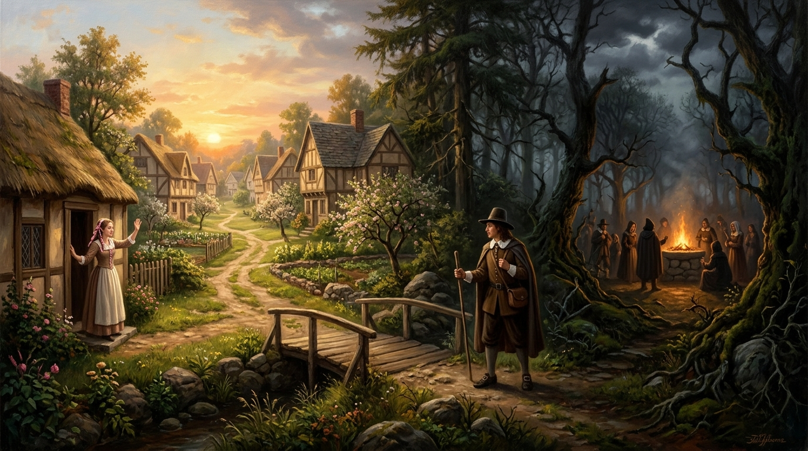
Landscape synopsis: Between Light and Shadow. On the left, sunlit Salem village and Faith's pink ribbons; on the right, the gloomy ancient forest and the distant bonfire altar. Why does Hawthorne place Goodman Brown's crisis at the bridge between community trust and spiritual suspicion?
“Young Goodman Brown came forth at sunset into the street at Salem village; but put his head back, after crossing the threshold, to exchange a parting kiss with his young wife. And Faith, as the wife was aptly named, thrust her pretty head into the street, letting the wind play with the pink ribbons of her cap...”
Look for: Why does Hawthorne emphasize the "pink ribbons" right before Brown enters the dark forest?
The Devil and Daniel Webster
Stephen Vincent Benét · 1936 · grades 6–12
Desperate New Hampshire farmer Jabez Stone sells his soul to the mysterious “Mr. Scratch” for ten years of prosperity. Facing eternal foreclosure, he hires legendary orator Daniel Webster to plead his case at midnight before a spectral jury of history's worst villains, presided over by Salem's Judge Hathorne.
Look for: Webster’s defense strategy. When legal logic fails, how does Webster appeal to the jury's shared human memory of sorrow, failure, freedom, and redemption?
Content: demonic pact, hellfire imagery, and historical traitors. Inspiring moral resolution celebrating freedom, mercy, and standing for one's neighbor. (Compare with the real Daniel Webster's 1830 Salem speech in the Forensic shelf below.)
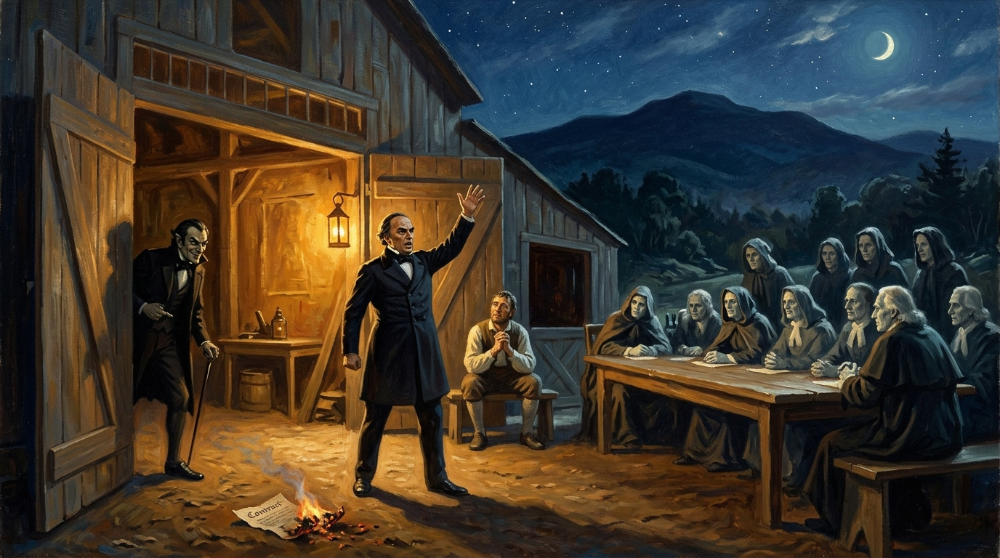
Landscape synopsis: Pleading for Liberty. Daniel Webster raises his hand in the lantern-lit barn doorway beneath Mount Monadnock, defending his neighbor's soul before a spectral jury as the demonic contract turns to ashes. How does Webster appeal to mercy and human dignity over cold legalism?
“‘He is your client, Mr. Webster,’ said Scratch, smiling. ‘I got him according to the laws of the country and upon the terms of a legal mortgage.’... Dan’l Webster looked at the jury—men with fire in their eyes and the mark of the rope about their necks... He knew that if he could not reach their humanity, Jabez Stone was lost. He began to speak of the simple things that all men know—the smell of the New Hampshire dawn, the taste of cold water on a haying day, the sorrow that comes with being human and the glory that comes with rising above it.”
Look for: Why does Webster admit human weakness rather than claiming Jabez was innocent? How does grace and human dignity overcome the letter of the contract?
The Yellow Wallpaper
Charlotte Perkins Gilman · 1892 · grades 9–12
Fig. 5. Illustration by Joseph Henry Hatfield for the 1899 edition of “The Yellow Wallpaper.” Compare the caption with the room the story describes. Public domain, via Wikimedia Commons.
A woman records what happens when her concerns are dismissed and she is forbidden to write. The room grows frightening as her forced isolation deepens.
Look for: what the narrator says about John early on. Which details show how little voice she is granted?
Content: confinement, postpartum mental distress, and psychological deterioration. Discuss with compassion and medical historical context.
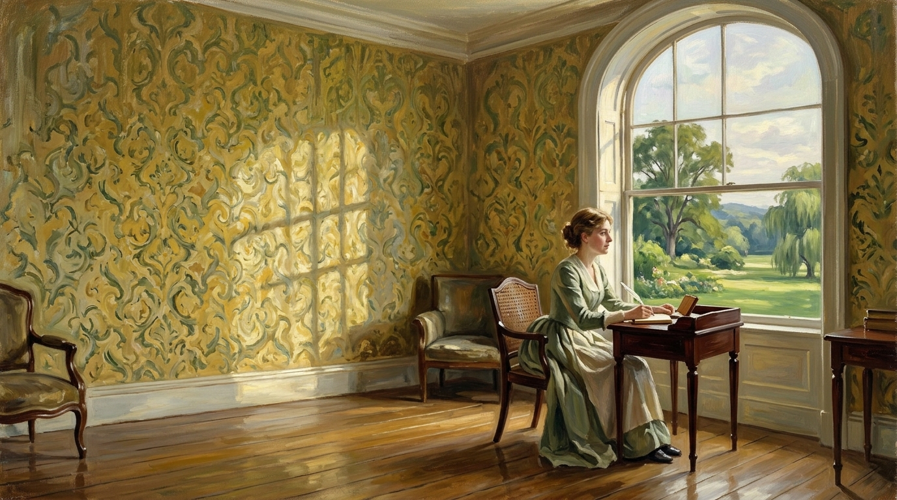
Landscape synopsis: The Window and the Wall. Morning sunlight streams across the yellow damask wallpaper, casting barred shadows across the room as the narrator secretly writes while looking toward the green estate gardens. How does the contrast between the fertile outdoor landscape and indoor confinement reflect her inner struggle?
“It is very seldom that mere ordinary people like John and myself secure ancestral halls for the summer... John is practical in the extreme. He has no patience with faith, an intense horror of superstition, and he scoffs openly at any talk of things not to be felt and seen and put down in figures.”
Look for: How does John’s rigid medical skepticism blind him to his wife’s actual humanity?
The Lottery
Shirley Jackson · 1948 · grades 9–12
An ordinary village follows an annual ritual without asking whether it is just. The calm, sunny atmosphere makes the moral shock far more chilling.
Look for: how the villagers speak about the old black box. Where does unthinking habit replace conscience?
Content: communal violence, including children participating. Preview before assigning.
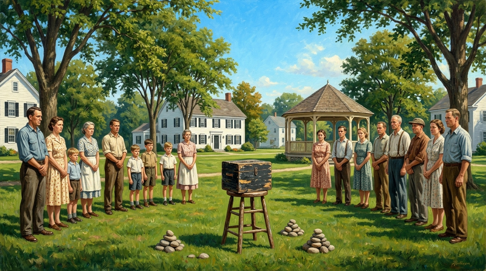
Landscape synopsis: The Village Square on June 27th. Beneath the brilliant morning sun of early summer, the tranquil village green gathers around the weathered black box and neatly piled stones. How does Jackson's sunny, familiar setting challenge the conventional Gothic trope that moral horror only hides in dark ruins?
“The morning of June 27th was clear and sunny, with the fresh warmth of a full-summer day; the flowers were blossoming profusely and the grass was richly green... The people of the village began to gather in the square, between the post office and the bank, around ten o'clock...”
Look for: Why does Jackson frame the horror in pastoral sunshine rather than nighttime gloom?
Sci-Fi & Speculative Dread
The terror of playing God, technological power untethered from moral wisdom, and human fragility before the cosmos. What happens when intellect outruns reverence?
Frankenstein
Mary Shelley · 1818 · selected chapters grade 8; full novel grades 9–12
Fig. 6. Charles Ogle as the creature in Edison's Frankenstein (1910), the first screen adaptation. Compare him with Shelley's text: what did filmmakers emphasize, and what did they omit? Public domain, via Wikimedia Commons.
Victor breathes life into an artificial creature and instantly recoils from him. Shelley's foundational novel asks what a maker owes the life he has brought into the world.
Look for: Victor's actions immediately after the creature's yellow eye opens. What responsibility does he accept or abandon?
Content: death, abandonment, sustained grief, and scientific overreach. The creature is not named Frankenstein.
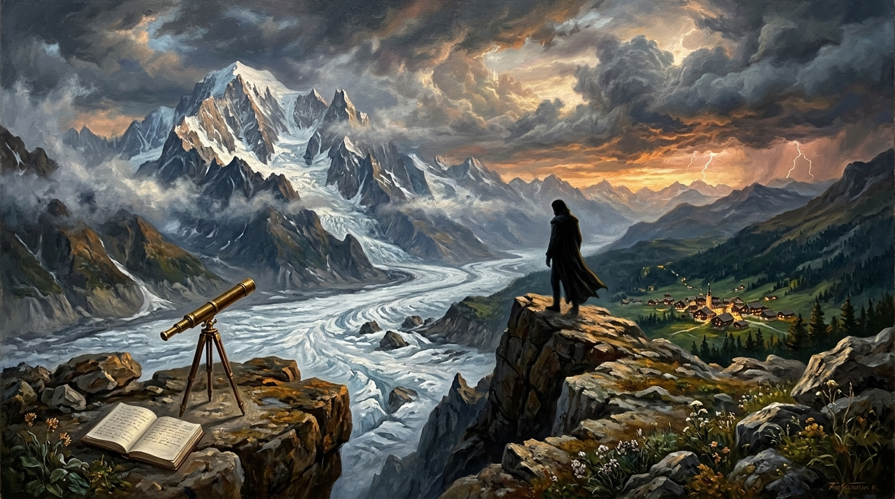
Landscape synopsis: The Creature on the Glacier. High above the frozen Mer de Glace and beneath the storm clouds of Mont Blanc, the solitary Creature looks down on the warm lights of human fellowship. What moral duty did Victor abandon when he fled the life he engineered?
“No one can conceive the variety of feelings which bore me onwards, like a whirlwind, eager to penetrate into the secrets of nature... A new species would bless me as its creator and source; many happy and excellent natures would owe their being to me. No father could claim the gratitude of his child so completely as I should deserve theirs.”
Look for: Victor’s craving for adulation. How does pride mask itself as scientific service?
The Birth-Mark
Nathaniel Hawthorne · 1843 · grades 8–12
Fig. 7. Joseph Wright of Derby, The Alchymist in Search of the Philosopher's Stone (1771). Like Hawthorne's Aylmer, Wright's alchemist pursues hidden secrets in a secluded laboratory. Derby Museum, public domain, via Wikimedia Commons.
Aylmer, a brilliant natural philosopher, becomes obsessed with a small crimson mark on his wife's cheek—the sole sign of earthly imperfection. In his pride to engineer perfection, he destroys her.
Look for: Georgiana reading Aylmer's private laboratory journal. What does she discover about his past experiments?
Content: obsessive perfectionism, marital manipulation, and the fatal cost of scientific pride.
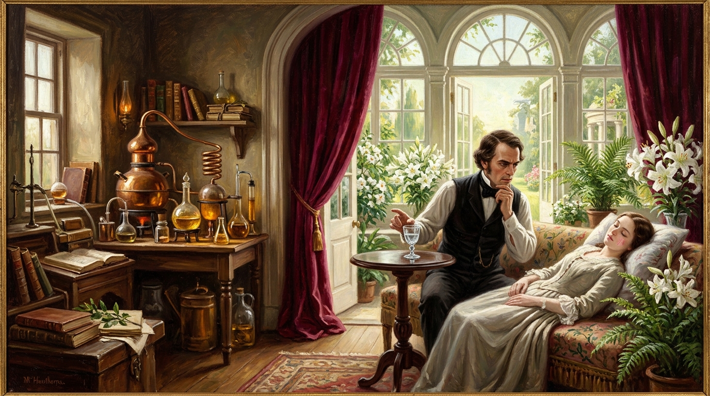
Landscape synopsis: The Alchemist's Threshold. Aylmer's dark laboratory opens into a sunlit conservatory of white lilies, where he gazes with prideful obsession upon his sleeping wife and her pale mark. How does Aylmer's refusal to accept creaturely limits become an idolatrous assault on divine design?
“In the centre of Georgiana’s left cheek there was a singular mark... Aylmer had not been long married, however, before he found this crimson hand an object of painful interest... It was the fatal flaw of humanity which Nature, in one shape or another, stamps ineffaceably on all her productions.”
Look for: Why does Aylmer view creaturely mortal limits as an intolerable personal insult?
The War of the Worlds
H. G. Wells · 1898 · grades 6–12
Fig. 8. Henrique Alvim Corrêa's illustration for the 1906 edition of The War of the Worlds. Notice how the machine towers over the trees, reducing humans to ants. Public domain, via Wikimedia Commons.
Cold Martian intellects descend on Victorian England with Heat-Rays and metallic tripods. Human technological pride is instantly leveled, leaving survivors wandering silent, desolated roads.
Look for: the novel's famous ending. What saved humankind when all military defense, science, and intellect had failed?
Content: alien invasion, societal collapse, and dread of annihilation. Non-graphic; focuses on awe and human vulnerability.
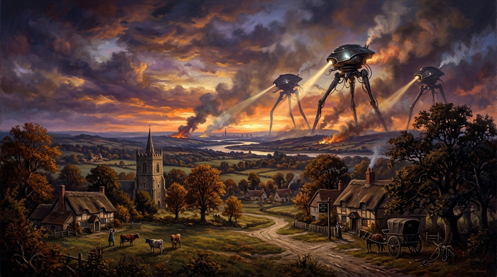
Landscape synopsis: The Surrey Twilight & Martian Incursion. Massive tripod fighting machines march across the glowing twilight horizon of Surrey, dwarfing church steeples and cottages alike. How does Wells use scale and landscape to humble human technological pride?
“No one would have believed in the last years of the nineteenth century that this world was being watched keenly and closely by intelligences greater than man’s and yet as mortal as his own; that as men busied themselves about their various concerns they were scrutinised and studied, perhaps almost as narrowly as a man with a microscope might scrutinise the transient creatures that swarm and multiply in a drop of water.”
Look for: Wells inverting human superiority by comparing humankind to microbes on a glass slide.
The Invisible Man
H. G. Wells · 1897 · grades 6–9
Fig. 9.Pearson's Magazine cover (1897) serializing Wells' novel. Griffin's bandages and dark glasses conceal not a wound, but a terrifying void. Public domain, via Wikimedia Commons.
Griffin discovers the chemical secret of invisibility, only to find that total anonymity strips him of warmth, clothing, food, and fellowship—driving him into paranoid tyranny.
Look for: how Griffin speaks to others once he believes he can never be caught. What does visibility have to do with accountability and neighbor-love?
Content: theft, cruelty, paranoia, and moral collapse. Explores Plato's Ring of Gyges in a modern scientific setting.
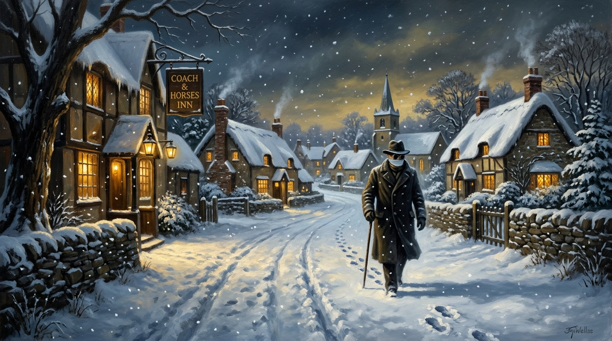
Landscape synopsis: The Stranger Arrives in Iping. A lone traveler trudges through the biting winter blizzard into the quiet village of Iping, leaving footprints in the snow while concealing his bodiless void beneath thick woolen layers. How does Griffin's invisible state illustrate the danger of freedom disconnected from moral accountability?
“The stranger came early in February, one wintry day, through a biting wind and a driving snow... He was wrapped up from head to foot, and the brim of his soft felt hat hid every inch of his face but the shiny tip of his nose... He held a thick glove-hand to his mouth, as if he were holding a handkerchief, and he seemed to be speaking through it.”
Look for: The physical burden of total secrecy. What does Griffin sacrifice to remain hidden?
Forensic, Conscience & True Crime
Historical courtrooms, the weight of circumstantial evidence, and the inescapable voice of the guilty conscience. These non-sensational historical cases examine the pursuit of truth and the defense of the innocent.
The Murder of Captain Joseph White: The Voice of Conscience
Daniel Webster · 1830 · grades 8–12
Fig. 10. Chester Harding, portrait of Daniel Webster (c. 1828). In the 1830 Salem murder trial, Webster argued that guilt cannot remain silent: “The secret is his own, and it is horrifying to him.” RISD Museum, public domain, via Wikimedia Commons.
In Salem (1830), conspirators thought they had committed the flawless murder without witnesses. Statesman Daniel Webster delivered America's most famous courtroom meditation on the agony of hidden guilt, directly inspiring Poe's The Tell-Tale Heart.
Look for: Webster's description of the trembling suspect. Where does he argue that conscience acts as God's own internal witness against the wrongdoer?
Content: closing argument in a historical murder trial. Completely non-graphic; focus is on conscience, moral law, and Proverbs 28:1.
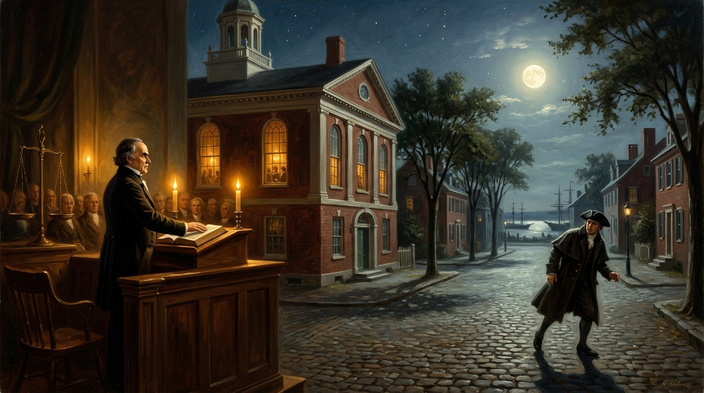
Landscape synopsis: The Inescapable Shadow. Daniel Webster addresses the Salem courtroom with open Bible and scales of justice, while on the moonlit cobblestones below, a wrongdoer flees his own elongated shadow. Connect this scene to Proverbs 28:1: why does conscience act as an inward prosecutor that no wall can shut out?
In Salem (1830), conspirators thought they had committed the flawless murder without witnesses. Statesman Daniel Webster delivered America's most famous courtroom meditation on the agony of hidden guilt, directly inspiring Poe's The Tell-Tale Heart.
Look for: Webster's description of the trembling suspect. Where does he argue that conscience acts as God's own internal witness against the wrongdoer?
Content: closing argument in a historical murder trial. Completely non-graphic; focus is on conscience, moral law, and Proverbs 28:1.
“He has done the deed. There is no hour of darkness or solitude in which he can enjoy it. The whole creation of God has neither nook nor corner where the guilty can bestow it, and say it is safe... He feels it in his pulse, he sees it in his shadow, and the ghost of his guilt haunts him even to his dreams.”
Look for: Why does Webster describe conscience as an unyielding master rather than a quiet voice?
The Case of Mr. George Edalji
Sir Arthur Conan Doyle · 1906–1907 · grades 6–12
Fig. 15. Sir Arthur Conan Doyle, portrait by Herbert Rose Barraud (1893). When police wrongly imprisoned George Edalji, Doyle turned real-life investigator to prove his innocence and reform British justice. Public domain, via Wikimedia Commons.
When police falsely imprisoned a vicar's son due to racial prejudice and shoddy evidence, the creator of Sherlock Holmes investigated in real life—using forensic optics, mud analysis, and handwriting tests to exonerate him and establish Britain's Court of Criminal Appeal.
Look for: how Doyle tests Edalji's eyesight and the nighttime timeline. How does careful observation dismantle prejudice?
Content: wrongful conviction, anonymous poison-pen letters, and forensic exoneration. Connects to Proverbs 31:8 (defending the voiceless).
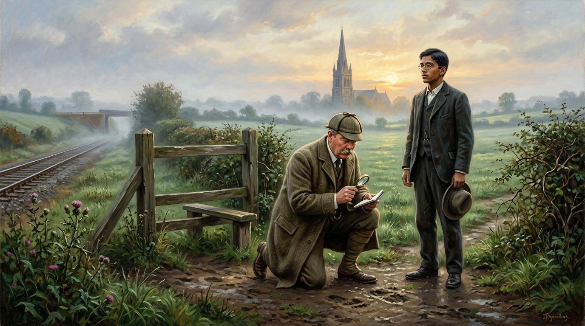
Landscape synopsis: Forensic Dawn in Great Wyrley. Kneeling beside a rural railway stile in the morning mist, Arthur Conan Doyle examines physical tracks alongside George Edalji. How does rigorous forensic evidence uphold justice and protect the innocent when prejudice and rumor take hold?
“I called upon Mr. Edalji in December, 1906. He was a young man of slight build, with dark hair and eyes... He had come to my hotel by appointment, but he walked across the hall in a manner which arrested my attention. He held the newspaper he had been reading within two inches of his nose... ‘Are you very short-sighted?’ I asked.”
Look for: The power of direct medical observation over police assumptions.
The Examination of Rebecca Nurse
Salem Court Records · 1692 · grades 8–12
Fig. 16. A courtroom scene from the Salem witch trials, 1876 engraving. Judges pressured the accused to confess; 71-year-old Rebecca Nurse refused to bear false witness, choosing death over a lie. Public domain, via Wikimedia Commons.
Primary source transcripts from 1692, recording 71-year-old grandmother Rebecca Nurse before the Salem magistrates. While others falsely confessed to escape execution, Nurse steadfastly refused to lie, maintaining her Christian integrity.
Look for: the magistrates' leading questions. Where do they assume guilt before evidence is offered, and how does Nurse reply?
Content: historical courtroom interrogation, mass panic, and judicial failure. Connects to Exodus 20:16 (bearing false witness) and Hawthorne's Young Goodman Brown.
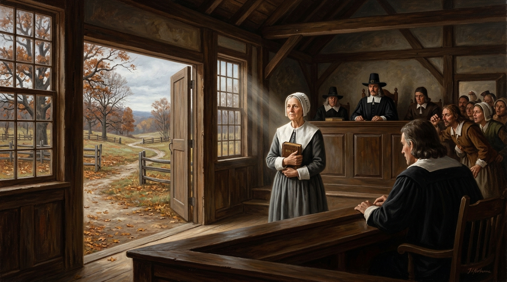
Landscape synopsis: Faith and Integrity in the Salem Meetinghouse. Morning sunlight cuts across the timber meetinghouse as 71-year-old grandmother Rebecca Nurse stands with unwavering faith before the magistrates, refusing to compromise the truth. How does personal integrity contrast with collective hysteria?
“Hathorne: ‘What do you say (speaking to one afflicted) have you seen this woman hurt you?’ ‘Yes she beat me this morning.’ Hathorne: ‘Nurse, here are two: Ann Putnam the child & Abigail Williams of her accusation, what do you say to it?’ Nurse: ‘At my age and condition, I have nobody to look to but God. I am as innocent as the child unborn.’”
Look for: Nurse grounding her defense on the living God rather than trying to appease hysteria.
The Mystery of the Mary Celeste
Maritime Court of Inquiry & Arthur Conan Doyle · 1872/1884 · grades K–8
Fig. 17. The brigantine Mary Celeste (originally Amazon) under sail in 1861. Discovered in 1872 with sails set and cargo intact, her entire crew was vanished without a struggle. Public domain, via Wikimedia Commons.
In 1872, a sound, seaworthy merchant brigantine was found drifting in the Atlantic with sails set, food provisions untouched, and navigational log up to date—yet not a single soul was aboard. Arthur Conan Doyle later published a celebrated mystery story based on the inquiry.
Look for: the ship's inventory (undamaged hull, full water casks, undisturbed personal chests). What common theories does the physical evidence rule out?
Content: unexplained maritime disappearance with zero violence or bloodshed; pure deductive forensic mystery.
Landscape synopsis: The Solitary Voyage of the Mary Celeste. Billowing white canvas carries the sound brigantine across the sunlit, rolling Atlantic swell with decks and cargo intact, yet devoid of a single soul. Why does complete physical order create a more compelling mystery than violent wreckage?
“The vessel was in thorough seaworthy condition, with some three and a half feet of water in the hold... The cargo of 1,701 barrels of alcohol was well stowed and in good condition. Personal effects of the crew, including boots and clothes, were undisturbed in their sea chests. The ship’s paper and log were up to date, the last entry being November 24th.”
Look for: Why does complete physical order feel more haunting than a wreckage scene?
The Forensic Casebook: Truth vs. Hysteria
True dread often arises not from supernatural monsters, but from the terrifying ease with which human communities abandon truth for rumor, or try to conceal terrible wrongdoing. Test each case below to see how physical evidence and biblical standards of justice dismantle fear.
Salem Court (1692) · The Trial of Rebecca Nurse
The Hysteria & Spectral Claim
Afflicted young girls fell into fits, claiming that Rebecca Nurse’s invisible 'spectre' was biting, pinching, and choking them...
What Truth & Biblical Due Process Proved
Thirty-nine neighbors signed a brave petition attesting to Nurse’s blameless Christian charity...
The Bible includes visions, judgments, death, and encounters with powers people cannot control. These passages can be frightening, but they are not written as entertainment. Read the whole scene and ask what the passage says about God, human choices, judgment, lament, or hope. Literary details matter; genre, covenant, and context matter even more.
Daniel 5
The writing on the wall · grades 6–12
Fig. 14. Rembrandt, Belshazzar's Feast (c. 1636–38). Find the guests' faces: who sees the writing first, and who is still reaching for the cup? Public domain, via Wikimedia Commons.
A profane royal feast halts instantly when a disembodied hand writes a mysterious message upon the wall. Read through Daniel's interpretation: what divine warning had the king willfully ignored?
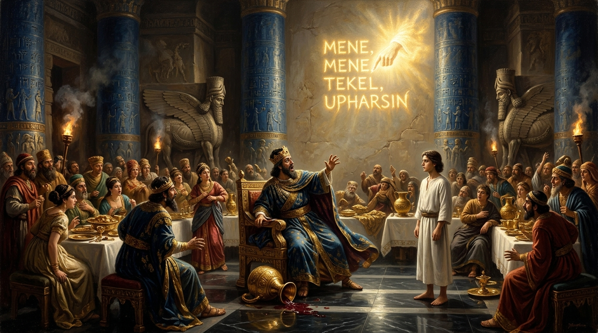
Landscape synopsis: Belshazzar's Feast. A radiant hand of divine light writes glowing letters upon the palace wall, instantly halting the idolatrous feast and shattering royal arrogance. How does holy awe before God's judgment differ from mere fictional horror?
“In the same hour came forth fingers of a man’s hand, and wrote over against the candlestick upon the plaister of the wall of the king’s palace: and the king saw the part of the hand that wrote. Then the king’s countenance was changed, and his thoughts troubled him, so that the joints of his loins were loosed, and his knees smote one against another.”
Look for: The sudden physical helplessness of a monarch who moments earlier toasted his idols.
Ezekiel 37:1–14
The valley of dry bones · selected reading K–5; full passage 6–12
Fig. 15. Gustave Doré, The Vision of the Valley of the Dry Bones (1866). The scene is eerie before it is hopeful. Compare the picture with the movement from dry bone to breath in the text. Public domain, via Wikimedia Commons.
The prophet is set down in a valley full of very dry, scattered bones. The opening vision evokes desolation, but moves toward divine breath and covenant renewal. What transforms the scene from a graveyard into life?
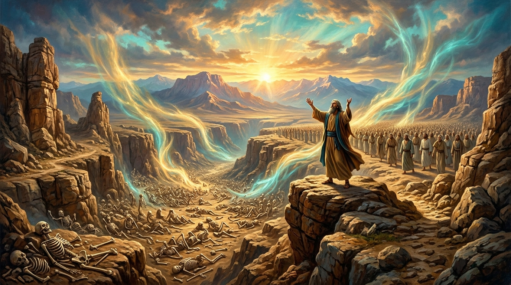
Landscape synopsis: The Breath of Life in the Valley of Dry Bones. Across a vast desert canyon at sunrise, the breath of God (Ruach) sweeps through the scattered bones, raising a living host under dawn light. How does the biblical movement from desolation to covenant resurrection contrast with fictional tales of the undead?
“The hand of the Lord was upon me, and carried me out in the spirit of the Lord, and set me down in the midst of the valley which was full of bones... and, behold, there were very many in the open valley; and, lo, they were very dry. And he said unto me, Son of man, can these bones live?”
Look for: Why does God ask the prophet the question before performing the miracle?
1 Samuel 28:3–25
Saul and the medium of Endor · grades 9–12
Fig. 16. Benjamin West, Saul and the Witch of Endor (1777). Notice how the painter captures Saul's collapse. What spiritual tragedy does the biblical text emphasize? Public domain, via Wikimedia Commons.
A desperate king seeks a forbidden consultation in the dark after God answers him no more. Track Saul's terror, the prophet's grim message, and the tragic consequences of disobedience.
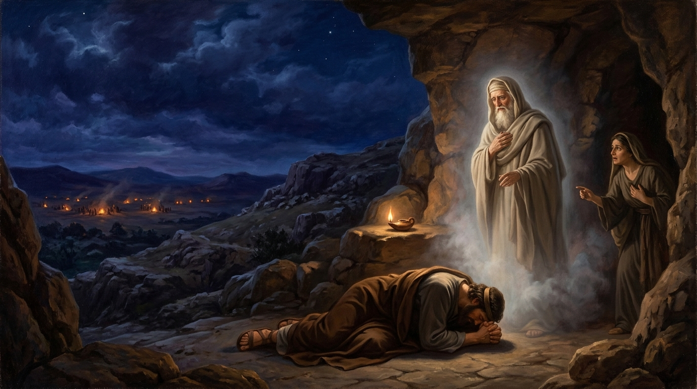
Landscape synopsis: Saul in the Shadows of Endor. In a subterranean cave beneath the nocturnal hills of Gilboa, a disguised King Saul falls face-down as the prophet Samuel speaks solemn truth. What does Saul's spiritual tragedy teach about the danger of seeking forbidden power apart from God?
“And Saul disguised himself, and put on other raiment, and he went, and two men with him, and they came to the woman by night: and he said, I pray thee, divine unto me by the familiar spirit... And the king said unto her, Be not afraid: for what sawest thou? And the woman said unto Saul, I saw gods ascending out of the earth.”
Look for: The tragic indignity of an anointed king creeping in disguised clothes at midnight.
Revelation 6:1–8
The four horsemen · grades 9–12
Fig. 17. Albrecht Dürer, The Four Horsemen (1498). Match each rider to the seal that releases it. Which parts are Dürer's artistic reading, and which are in the biblical text? National Gallery of Art, CC0, via Wikimedia Commons.
The breaking of the seals unleashes symbolic figures of conquest, war, scarcity, and death. What does prophetic vision reveal about human suffering and divine sovereignty that a plain journalistic report cannot?
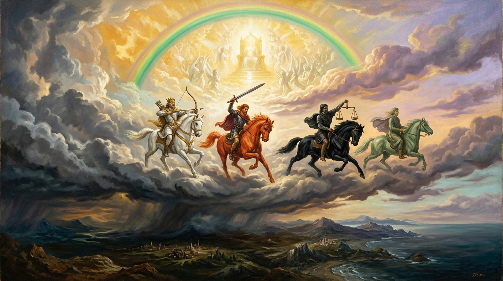
Landscape synopsis: The Four Horsemen Beneath Sovereign Grace. The symbolic horsemen ride across earth and sky under divine bounds, while high above, an emerald rainbow encircles God's heavenly throne. Why is it vital to read apocalyptic judgment within the assurance of divine sovereignty and ultimate redemption?
“And I looked, and behold a pale horse: and his name that sat on him was Death, and Hell followed with him. And power was given unto them over the fourth part of the earth, to kill with sword, and with hunger, and with death, and with the beasts of the earth.”
Look for: Notice the strict boundary of "the fourth part." Apocalyptic dread is bounded by divine sovereignty.
Revelation 9:1–12
The locust vision · grades 9–12
Fig. 18. Locusts of the fifth trumpet, Bamberg Apocalypse (c. 1000). A medieval artist's reading of apocalyptic metaphor; compare it with the exact textual descriptions in Revelation 9. Public domain, via Wikimedia Commons.
Unsettling composite imagery fills the fifth trumpet vision. Notice the strict divine limits placed on their power before attempting to decode any single symbol.
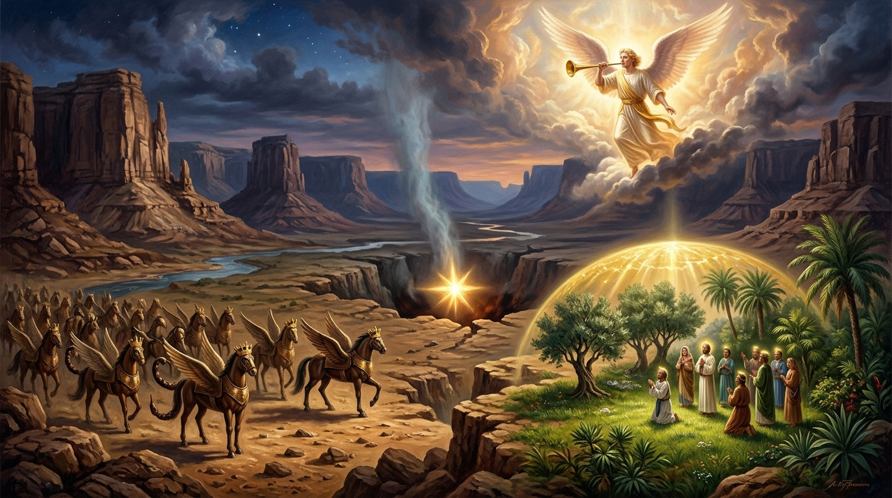
Landscape synopsis: The Fifth Trumpet and the Protective Canopy. An angel sounds the fifth trumpet against twilight skies, while a radiant celestial light completely shelters God's faithful servants from restrained symbolic forces below. How does prophetic imagery emphasize divine protection and boundary over chaotic fear?
“And the shapes of the locusts were like unto horses prepared unto battle; and on their heads were as it were crowns like gold, and their faces were as the faces of men. And they had hair as the hair of women, and their teeth were as the teeth of lions...”
Look for: How does combining disparate creatures create a sense of moral and cosmological discordance?
A vital theological boundary
Hawthorne may employ Christian vocabulary for a fictional psychological ambiguity; Revelation uses apocalyptic imagery inside canonical Scripture. Similar motifs do not make the works the same kind of literature. Avoid reducing Scripture to entertainment, or treating apocalyptic vision as a speculative prediction game.
Your Socratic evidence journal
Record your close-reading notes as you read. Notes save locally in this browser on your device. Use the download button to save a text file, or print a seminar worksheet for class submission.
Reading Checklist:
0 of 23 works studied.
Notes save automatically in this browser.
Clear all your saved journal entries and checklist marks from this browser?
For the teacher
One class period: fear and evidence
5 minutes: contrast surprise, suspense, dread, and holy awe using the Radcliffe dial. 10 minutes: read one chosen scene aloud in the Close-Reading Studio, stopping right before its decisive turning point. 10 minutes: students mark an exact detail in Layer 1 (Notice). 15 minutes: discuss Layer 2 (Trace) and Layer 3 (Discuss) with peer evidence. 10 minutes: record a revised conclusion in the Evidence Journal. For Scripture, also locate its genre, speaker, and covenantal context.
Teaching Sci-Fi Horror: Hubris and the Tree of Knowledge
Connect Frankenstein, The Birth-Mark, and The Invisible Man to Genesis 3 and Christian stewardship: the perennial temptation to seize godlike power without submission to moral law. Ask students: When does the pursuit of scientific knowledge turn from wonder into idolatry? What ethical duties do innovators owe to their neighbors and creation?
Teaching True Crime, Conscience & Courtrooms: Moral Law and the Devil on Trial
Pair Daniel Webster's Salem argument with Edgar Allan Poe's The Tell-Tale Heart and Proverbs 28:1 ("The wicked flee when no one pursues"). Contrast Webster's focus on the inescapable agony of conscience with Conan Doyle's George Edalji investigation and the Salem 1692 records. Furthermore, pair the real Webster's 1830 murder speech with Stephen Vincent Benét's classic folklore trial The Devil and Daniel Webster and Poe's satirical Never Bet the Devil Your Head—demonstrating how American writers use the courtroom and the Faustian pact to examine free will, human dignity, careless speech (Matthew 12:36), and standing up for the condemned (Proverbs 31:8–9). For The Conqueror Worm, guide students to analyze how Poe’s nihilistic puppet theater inverts the Christian promise that death is swallowed up in victory (1 Corinthians 15:54–55).
Christian discussion without forcing artificial answers
Ask what a story reveals about moral responsibility, truth, neighbor-love, pride, or hope. Distinguish a narrator's flawed perspective from an author's argument, and a fictional spiritual motif from Christian doctrine. Students may hold differing, thoughtful interpretations of an ambiguous ending while still practicing rigorous textual analysis.
Pastoral care and student agency
Provide clear content notes before assigning readings. Invite students to choose an alternate text or step away from an intense scene without having to justify personal reasons to peers. Never ask students to disclose personal grief, family distress, or spiritual anxiety in a class discussion. Approach The Yellow Wallpaper with medical and historical compassion.
Texts and source notes
All literature and primary legal records are in the public domain and link to open scholarly collections: Project Gutenberg (Irving, Jacobs, Poe, Hawthorne, Shelley, Wells, and Doyle), the Poe Museum (The Tell-Tale Heart, The Conqueror Worm, and Never Bet the Devil Your Head), Project Gutenberg of Australia (The Case of Mr. George Edalji and Benét’s The Devil and Daniel Webster), the Salem Witch Trials Documentary Archive at the University of Virginia, and the Yale Avalon Project / Internet Archive. The Lottery remains under copyright and links to its original publisher at The New Yorker. Bible links open ClassroomOS's local reader so students can access available translations. Artwork plates include custom PG fine-art landscape synopsis scenes generated for ClassroomOS (2026) in classical painterly traditions (Hudson River School, Caspar David Friedrich, N. C. Wyeth, and American Impressionism) alongside historical public-domain and CC0 plates from the Metropolitan Museum of Art, National Gallery of Art, Rhode Island School of Design Museum, and Wikimedia Commons. Grade bands and content notices represent editorial recommendations for this microschool.